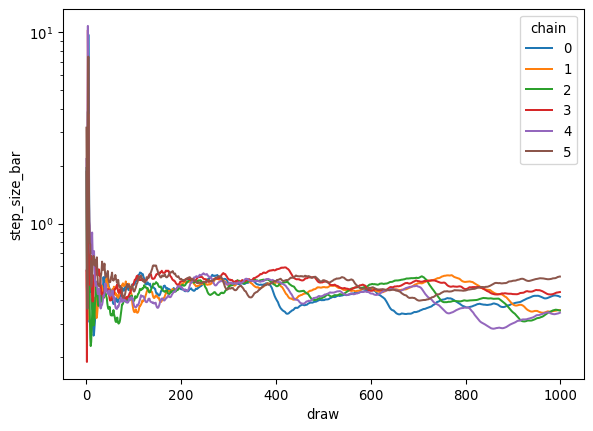

This guide explains the various statistics that nutpie collects during sampling. We’ll use Neal’s funnel distribution as an example, as it’s a challenging model that demonstrates many important sampling concepts.
Example Model: Neal’s Funnel
Let’s start by implementing Neal’s funnel in PyMC:
import pymc as pmimport nutpieimport numpy as npimport matplotlib.pyplot as pltimport seaborn as snsimport pandas as pdimport arviz as az# Create the funnel modelwith pm.Model() as model: log_sigma = pm.Normal('log_sigma') pm.Normal('x', sigma=pm.math.exp(log_sigma), shape=5)# Sample with detailed statisticscompiled = nutpie.compile_pymc_model(model)trace = nutpie.sample( compiled, tune=1000, store_mass_matrix=True, store_gradient=True, store_unconstrained=True, store_divergences=True, seed=42,)
Sampler Progress
Total Chains: 6
Active Chains: 0
Finished Chains:
6
Sampling for now
Estimated Time to Completion:
now
Progress
Draws
Divergences
Step Size
Gradients/Draw
2000
21
0.41
7
2000
24
0.35
7
2000
0
0.35
7
2000
13
0.44
7
2000
0
0.34
15
2000
5
0.53
7
Sampler Statistics Overview
The sampler statistics can be grouped into several categories:
Basic HMC Statistics
These statistics are always collected and are essential for basic diagnostics:
# Access through trace.sample_statsbasic_stats = ['depth', # Tree depth for current draw'maxdepth_reached', # Whether max tree depth was hit'logp', # Log probability of current position'energy', # Hamiltonian energy'diverging', # Whether the transition diverged'step_size', # Current step size'step_size_bar', # Current estimate of an ideal step size'n_steps'# Number of leapfrog steps]# Plot step size evolution during warmuptrace.warmup_sample_stats.step_size_bar.plot.line(x="draw", yscale="log")

Mass Matrix Adaptation
These statistics track how the mass matrix evolves:
Variables that are a source of convergence issues, will often show high variance in the final mass matrix estimate across chains.
The mass matrix will always be fixed for 10% of draws at the end, because we only run final step size adaptation during that time, but high variance in the mass matrix before this final window and indicate that more tuning steps might be needed.
Detailed Diagnostics
These are only available when explicitly requested:
detailed_stats = ['gradient', # Gradient at current position'unconstrained_draw', # Parameters in unconstrained space'divergence_start', # Position where divergence started'divergence_end', # Position where divergence ended'divergence_momentum', # Momentum at divergence'divergence_message'# Description of divergence]
Idintify Divergences
We can for instance use this to identify the sources of divergences:
TODO this section should really use the transformed gradients and draws, not the unconstrained ones, as that avoids the manual mass matrix correction. This is only available for the normalizing flow adaptation at the moment though.
In models with problematic posterior correlations, the singular value decomposition of gradients and draws can often point us to the source of the issue.
Let’s build a little model with correlations between parameters:
with pm.Model() as model: x = pm.Normal('x') y = pm.Normal("y", mu=x, sigma=0.01) z = pm.Normal("z", mu=y, shape=100)compiled = nutpie.compile_pymc_model(model)trace = nutpie.sample( compiled, tune=1000, store_gradient=True, store_unconstrained=True, store_mass_matrix=True, seed=42,)
Sampler Progress
Total Chains: 6
Active Chains: 0
Finished Chains:
6
Sampling for now
Estimated Time to Completion:
now
Progress
Draws
Divergences
Step Size
Gradients/Draw
2000
0
0.13
31
2000
0
0.16
31
2000
0
0.22
15
2000
0
0.14
31
2000
0
0.15
31
2000
0
0.15
31
Now we can compute eigenvalues of the covariance matrix of the gradient and draws (using the singular value decomposition to avoid quadratic cost):
def covariance_eigenvalues(x, mass_matrix):assert x.dims == ("chain", "draw", "unconstrained_parameter") x = x.stack(sample=["draw", "chain"]) x = (x - x.mean("sample")) / np.sqrt(mass_matrix) u, s, v = np.linalg.svd(x.T / np.sqrt(x.shape[1]), full_matrices=False)print(u.shape, s.shape, v.shape) s = xr.DataArray( s, dims=["eigenvalue"], coords={"eigenvalue": range(s.size)}, ) v = xr.DataArray( v, dims=["eigenvalue", "unconstrained_parameter"], coords={"eigenvalue": s.eigenvalue,"unconstrained_parameter": x.unconstrained_parameter, }, )return s **2, vmass_matrix = trace.sample_stats.mass_matrix_inv.isel(draw=-1, chain=0)draws_eigs, draws_eigv = covariance_eigenvalues(trace.sample_stats.unconstrained_draw, mass_matrix)grads_eigs, grads_eigv = covariance_eigenvalues(trace.sample_stats.gradient, 1/ mass_matrix)draws_eigs.plot.line(x="eigenvalue", yscale="log")grads_eigs.plot.line(x="eigenvalue", yscale="log")
We can see one very large and one very small eigenvalue in both covariances. Large eigenvalues for the draws, and small eigenvalues for the gradients prevent the sampler from taking larger steps. Small eigenvalues in the draws, and large eigenvalues in the grads mean, that the sampler has to move far in parameter space to get independent draws. So both lead to problems during sampling. For models with many parameters, typically only the large eigenvalues of each are meaningful, because of estimation issues with the small eigenvalues.
We can also look at the eigenvectors to see which parameters are responsible for the correlations: